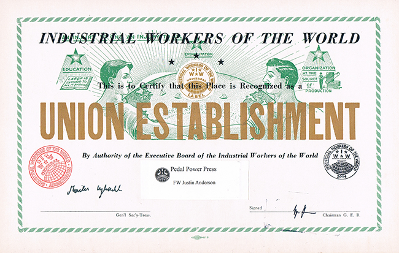
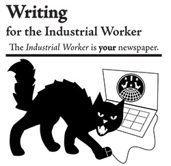

This is the news page for all IWW Departments and Unions. This page displays *all* news items from every Department and Union. To see news only from a particular Department, click on the Department title below.
For an overview of the IWW's Union structure, please visit the Unions homepage.
For branch, campaign, or general labor news, click on the appropriate sub-menu bars at the left under
the main "news" bar.
Submitted on Tue, 11/11/2014 - 4:39pm
TORONTO, ON - Harm reduction workers from across the city announced today that they have formed the Toronto Harm Reduction Workers Union (THRWU), an affiliate of the Industrial Workers of the World (IWW). Workers from South Riverdale Community Health Centre and Central Toronto Community Health Centres are the first to announce their affiliations with the union, and have demanded that their managements recognize the union and commit to negotiating with them. Already claiming over 50 members, the Toronto Harm Reduction Workers Union is the first of it’s kind in the world.
Submitted on Thu, 11/06/2014 - 6:09pm
Delegation Delivers Petitions to Whole Foods Management as Supporters Rally Outside San Fran Whole Foods
SAN FRANCISCO, CA - This afternoon a delegation of 20 cashiers, stockers, and cooks at Whole Foods Market initiated a temporary work stoppage to deliver a petition to Whole Foods management demanding a $5 an hour wage increase for all employees and no retaliation against workers for organizing a union. After the delegation presented the petition to management, workers and supporters held a rally outside the store, located at 4th and Harrison Streets in San Francisco’s South-of-Market district.
A worker must earn $29.83 an hour to afford a market-rate one-bedroom apartment in San Francisco, according to a 2014 report from the National Low Income Housing Coalition. Workers at the store currently earn from $11.25 to $19.25 per hour. The new minimum wage ordinance just approved by San Francisco voters will raise the City’s minimum to $12.25 an hour next year, less than half of what is needed to rent an apartment.
Submitted on Thu, 11/06/2014 - 11:50am
 Former IWW General Executive Board chair Frederic Lee died Oct. 23. A member of the IWW for 29 years, FW Lee was also a leading economist, founder of the Heterodox Economics Newsletter, and at the time of his death president-elect of the Association for Evolutionary Economics. His rigorous scholarship, international reputation, and commitment to organizing networks of solidarity helped open a space for alternative approaches in a field long dominated by worshippers of markets and wealth.
Former IWW General Executive Board chair Frederic Lee died Oct. 23. A member of the IWW for 29 years, FW Lee was also a leading economist, founder of the Heterodox Economics Newsletter, and at the time of his death president-elect of the Association for Evolutionary Economics. His rigorous scholarship, international reputation, and commitment to organizing networks of solidarity helped open a space for alternative approaches in a field long dominated by worshippers of markets and wealth.
Submitted on Wed, 11/05/2014 - 4:43pm

The IWW is calling on all artists and graphic designers to come up with new designs for our Union Shop Cards that are issued to workers who decide to organize and affiliate with the IWW (IWW shops, Sole-Proprietors, and Co-ops).
When the IWW recognizes shops they may use the union label on their products and they are issued an IWW Union Shop Card to publicly display. Since the union is beginning to run low on previous, older Shop Cards, the General Executive Board and the General Secretary Treasurer decided it would be in good form to update the Shop Cards and get fresh designs.
Submitted on Mon, 11/03/2014 - 1:50pm
Check out this newly-revised guide on how to effectively write for the Industrial Worker, official newspaper of the Industrial Workers of the World.
Click here to download!